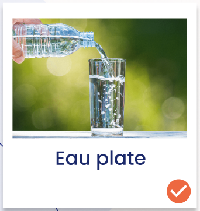
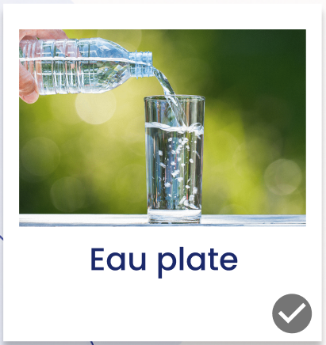
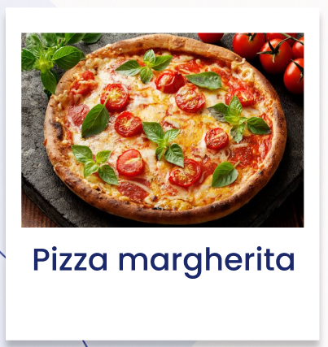
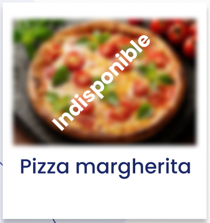
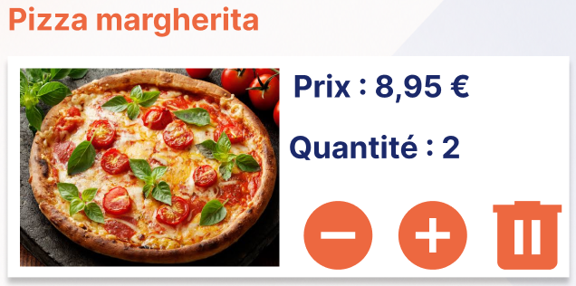
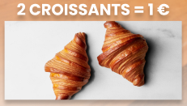
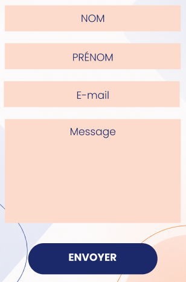
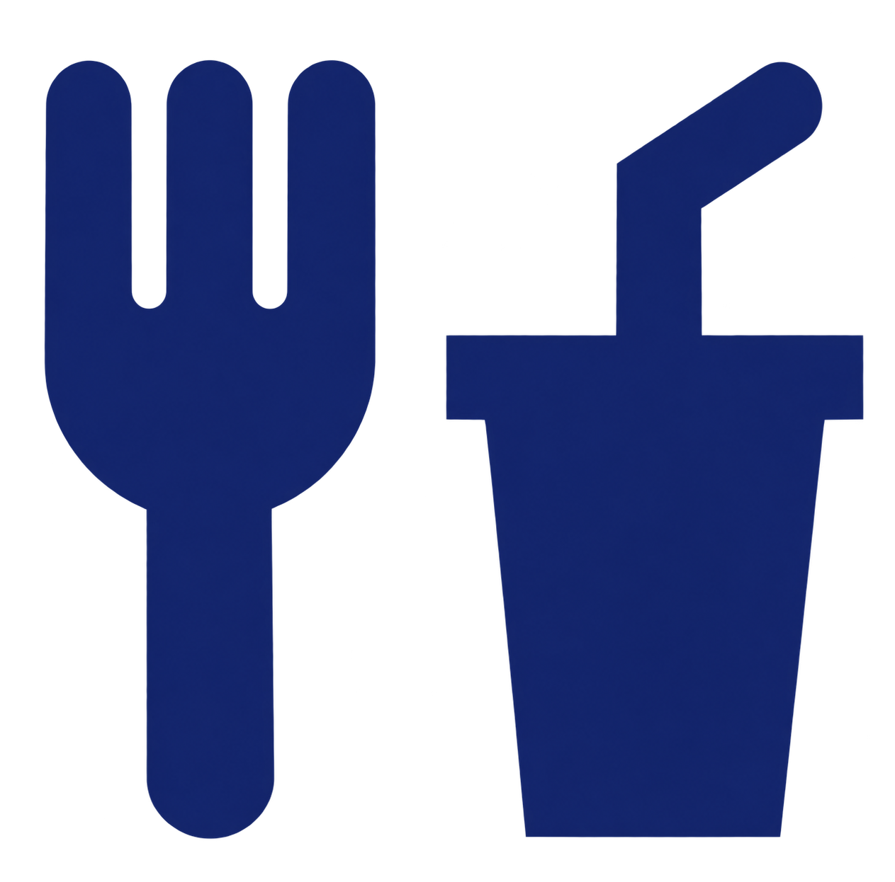
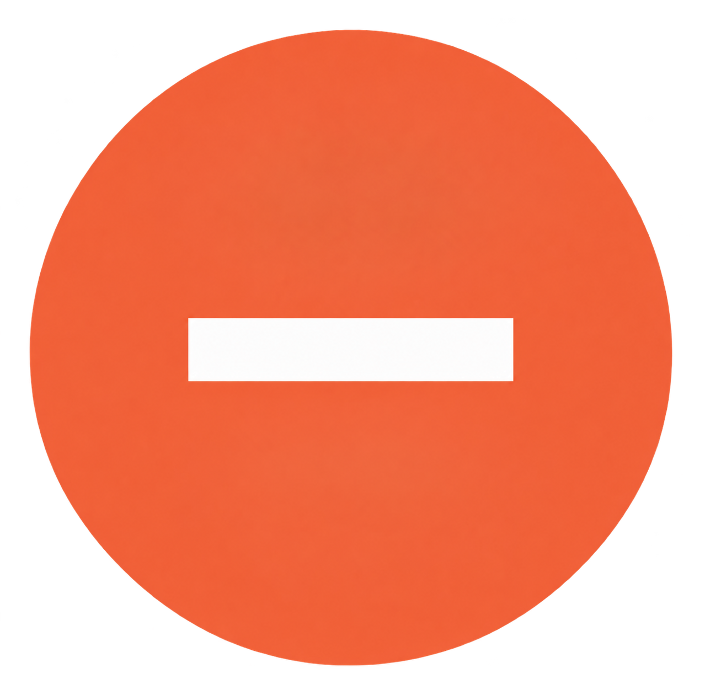
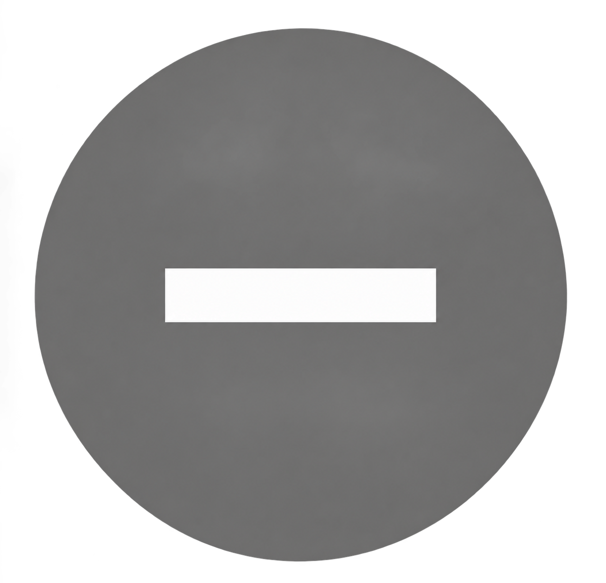

Couleur primaire CRM
Couleur secondaire CRM
Rééducation fonctionnelle
OFP
Services
Mécénat
Message d'erreur
Message d'avertissement
Message d'information
Succès/validation
Champ formulaire
Typographies
Verdana
Utilisée pour le corps de la page
Arial
Utilisée pour le corps de la page quand Verdana ne s'affiche pas
Georgia, serif
Utilisée pour les titres et les entêtes
OpenDyslexic
Utilisée pour faciliter la lecture pour les personnes dyslexiques
Composants







| Désription/Etat | Normal | Activé | Désactivé | Survolé |
|---|---|---|---|---|
| Icône flèche bleue - permet de revenir sur la page précédente | ||||
| Icône panier bleue - fait partie du menu d'accès rapide | ||||
| Icône cloche bleue - fait partie du menu d'accès rapide | ||||
| Icône maison bleue - fait partie du menu d'accès rapide | ||||
| Icône repas bleue - fait partie du menu d'accès rapide |  |
|||
| Icône profil bleue - fait partie du menu d'accès rapide | ||||
| Icône poubelle orange - fait partie du conteneur des articles du panier | ||||
| Icône moins orange - fait partie du conteneur des articles du panier |  |
 |
||
| Icône plus orange - fait partie du conteneur des articles du panier | ||||
| Icône check orange - fait partie du conteneur des articles du menu du jour |